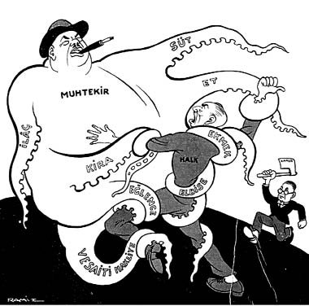

Ucuzluk Mart’la birlikte tatbik edilmeğe başlanacak:

Hükûmet (Halka) – Mart’a kadar dişini sık kurtarmaya geliyorum!..
Ramiz Gökçe, Karikatür, 27 Ocak 1938, S. 109
Not: Elinde balta ile koşan kurtarıcının; dönemin İktisat Vekili Celâl Bayar olduğu anlaşılmaktadır.